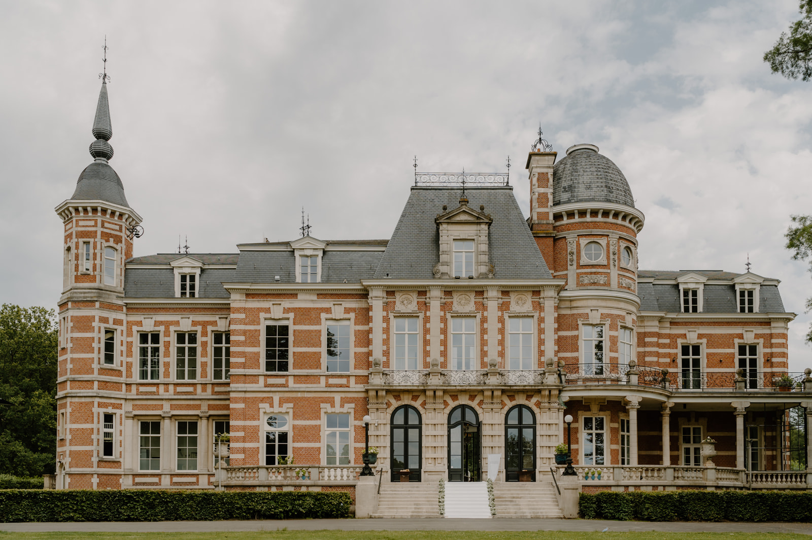
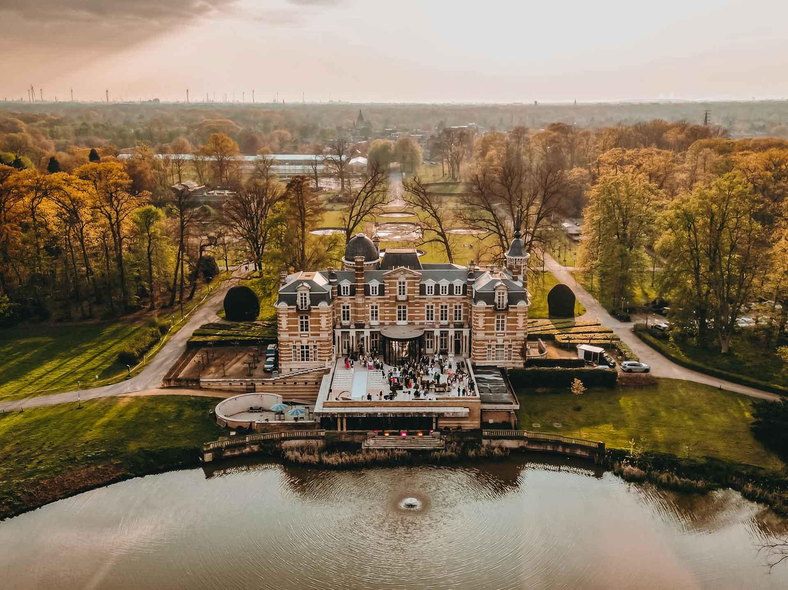

Kasteel claeys bouuaert
Provincie:
Adres:
Openingsuren:
Bezoekbaar:
Kasteel Claeys-Bouüaert, is een kasteel in Mariakerke bij Gent en eigendom van de stad. Het werd gebouwd in 1890-1892 voor Edmond Bracq-Hurraux naar ontwerp van Antwerps architect Joseph Schadde. Het kasteel is gelegen aan Kasteeldreef 2-6. Het omwalde waterkasteel bevindt zich in een boomrijk domein. Het goed zelf is echter van feodale oorsprong. De vorm der walgrachten laat een soort van Frankische "motte" vermoeden die waarschijnlijk eerst in het bezit is geweest van de "heren van de heerlijkheid Mariakerke", Raas van Gavere en daarna de familie Van Vaernewijck, en die nadien nog meermaals van eigenaar veranderd is. Wat de precieze geschiedenis betreft tast men in het duister. De huidige dreven die naar het kasteel leiden komen reeds voor op de kaart van Benthuys van 1729 en worden vermeld als de "mijnheere Pennemans dreve".
In 1770 was het kasteel in het bezit van de Gentse lakenkoopman Ferdinand J. Het kasteel werd gesloopt en heropgebouwd in 1869-1870 door suikerhandelaar Pierre-Charles Bracq-Grenier. Zijn zoon, handelaar en senator Edmond Bracq-Huraux betrok het domein in 1877, liet het vernieuwde kasteel in 1888-1889 opnieuw slopen en startte met de bouw van het huidige kasteel in 1890. De werf voor het nieuwe waterkasteel werd in 1892 door financiële moeilijkheden verkocht en het kasteel werd voltooid onder de laatste familie van privé-eigenaars, de familie Claeys-Bouüaert van den Peereboom. Deze bewoonde het kasteel tot in 1971. Het park met de omliggende gronden werden kort nadien aangekocht door de toenmalige gemeente Mariakerke. Het kasteel is een massief gebouw van bak- en hardsteen opgetrokken in neo-Vlaamse-renaissancestijl.
Links van de ingang bevinden zich de kasteelhoeve, hoveniershuis en de paardenstallen in gelijkaardige stijl doch reeds daterend van 1879. Sinds 1998 is er het Centrum voor Jonge Kunst gevestigd. Het CJK biedt een forum aan jonge kunstenaars. Een kleine theaterzaal biedt ook mogelijkheden voor theater- en muziekoptredens. Het CJK heeft een samenwerkingsverband met de Academie voor Beeldende Kunst van de stad Gent en richt onder andere Kasteelateliers in. Het kasteel werd in 1996 als monument beschermd.
De provincie Antwerpen biedt naast het bezoek aan Kasteel claeys bouuaert nog vele andere interessante activiteiten en bezienswaardigheden die uw bezoek compleet maken.
Bezoek het voormalige huis en atelier van Peter Paul Rubens
Bewonder de gotische architectuur en Rubens' meesterwerken
Wandel door een van de mooiste parken van Antwerpen
Ontdek de geschiedenis van Antwerpen in dit historische kasteel

Ontdek dit prachtige historische kasteel gelegen in Antwerpen, getuige van het rijke Belgische architecturale erfgoed.
Ontdekken
Ontdek dit prachtige historische kasteel gelegen in Antwerpen, getuige van het rijke Belgische architecturale erfgoed.
Ontdekken
Ontdek dit prachtige historische kasteel gelegen in Antwerpen, getuige van het rijke Belgische architecturale erfgoed.
OntdekkenAdres: Antwerpen, België